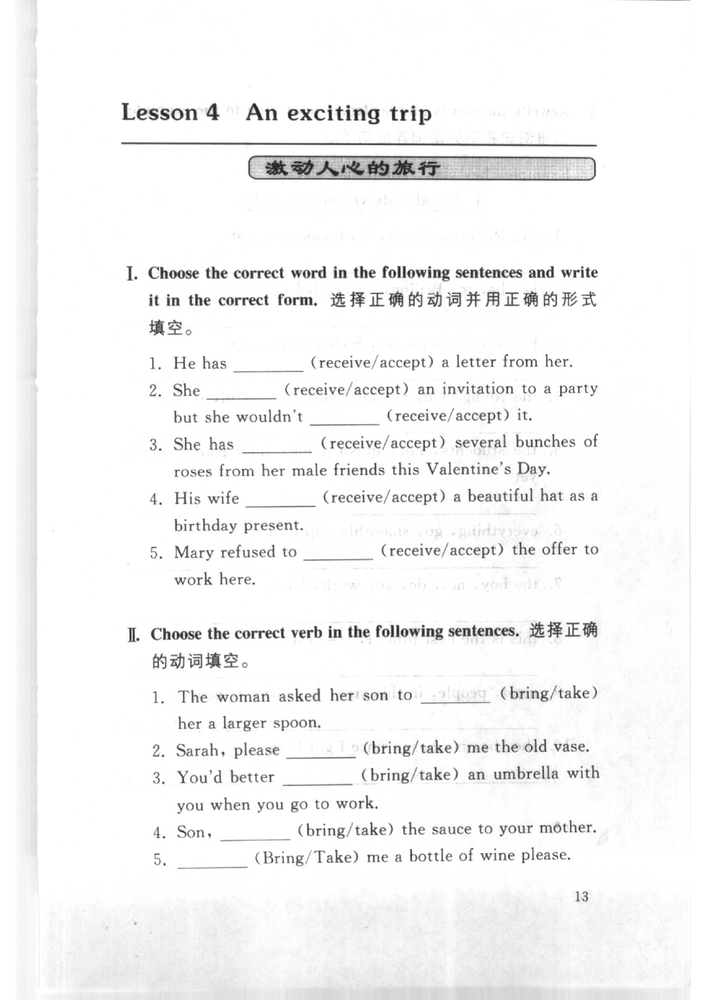
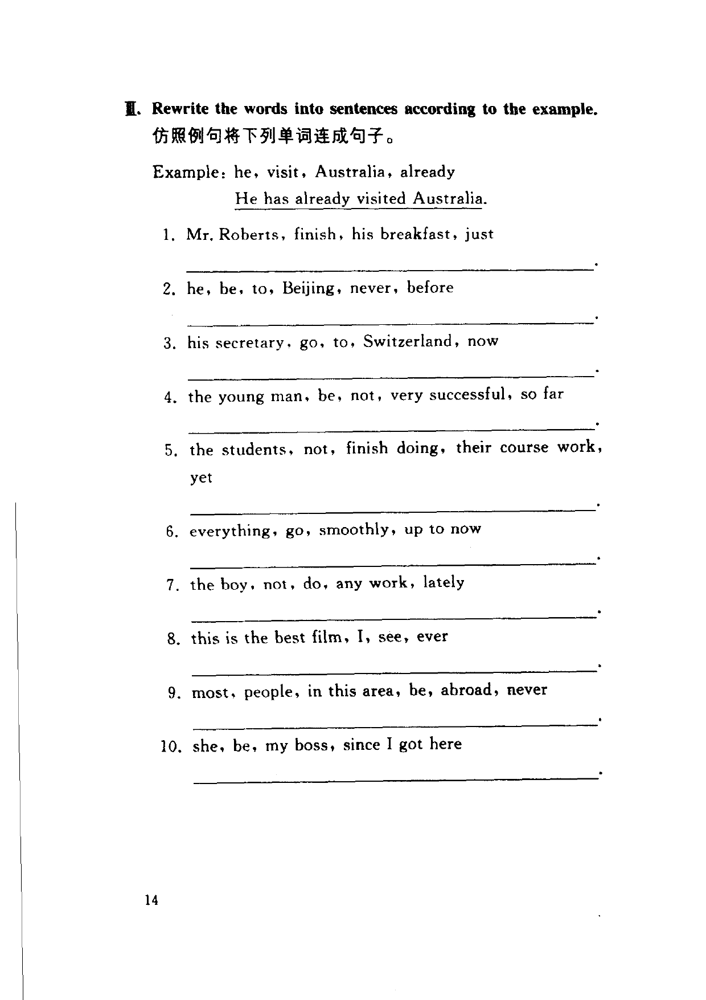
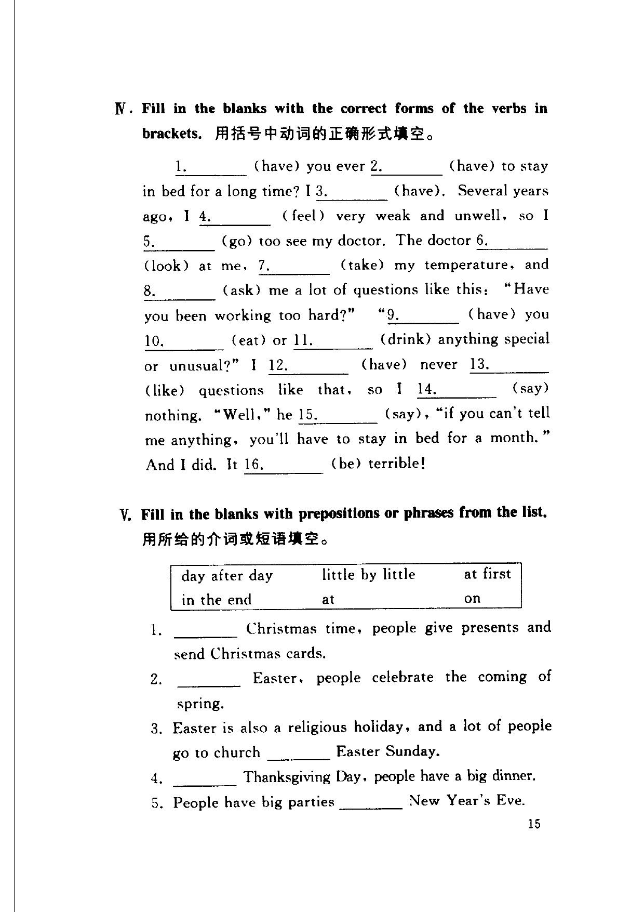

Grammar exercises · 语法练习
I. Choose the correct word in the following sentences and write it in the correct form.
选择正确的动词并用正确的形式填空。
-
I. Receive or accept — He has (receive/accept) a letter from her.
-
I. Receive or accept — She (receive/accept) an invitation to a party but she wouldn't (receive/accept) it.
-
I. Receive or accept — She has (receive/accept) several bunches of roses from her male friends this Valentine's Day.
-
I. Receive or accept — His wife (receive/accept) a beautiful hat as a birthday present.
-
I. Receive or accept — Mary refused to (receive/accept) the offer to work here.
II. Choose the correct verb in the following sentences.
选择正确的动词填空。
-
II. Bring or take — The woman asked her son to (bring/take) her a larger spoon.
-
II. Bring or take — Sarah, please (bring/take) me the old vase.
-
II. Bring or take — You'd better (bring/take) an umbrella with you when you go to work.
-
II. Bring or take — Son, (bring/take) the sauce to your mother.
-
II. Bring or take — (Bring/Take) me a bottle of wine please.
III. Rewrite the words into sentences according to the example.
仿照例句将下列单词连成句子。
Example · 例句
he, visit, Australia, already
He has already visited Australia.
-
III. Present perfect — Mr. Roberts, finish, his breakfast, just
-
III. Present perfect — he, be, to, Beijing, never, before
-
III. Present perfect — his secretary, go, to, Switzerland, now
-
III. Present perfect — the young man, be, not, very successful, so far
-
III. Present perfect — the students, not, finish doing, their course work, yet
-
III. Present perfect — everything, go, smoothly, up to now
-
III. Present perfect — the boy, not, do, any work, lately
-
III. Present perfect — this is the best film, I, see, ever
-
III. Present perfect — most, people, in this area, be, abroad, never
-
III. Present perfect — she, be, my boss, since I got here
IV. Fill in the blanks with the correct forms of the verbs in brackets.
用括号中动词的正确形式填空。
1. (have) you ever
2. (have) to stay in bed for a long time? I
3. (have). Several years ago, I
4. (feel) very weak and unwell, so I
5. (go) to see my doctor. The doctor
6. (look) at me,
7. (take) my temperature, and
8. (ask) me a lot of questions like this: "Have you been working too hard?"
9. (have) you
10. (eat) or
11. (drink) anything special or unusual?" I
12. (have) never
13. (like) questions like that, so I
14. (say) nothing. "Well," he
15. (say), "if you can't tell me anything, you'll have to stay in bed for a month." And I did. It
16. (be) terrible!
-
IV. Staying in bed — (have) you ever
-
IV. Staying in bed — you ever (have) to stay in bed
-
IV. Staying in bed — I (have)
-
IV. Staying in bed — Several years ago, I (feel) very weak and unwell
-
IV. Staying in bed — so I (go) to see my doctor
-
IV. Staying in bed — The doctor (look) at me
-
IV. Staying in bed — (take) my temperature
-
IV. Staying in bed — and (ask) me a lot of questions
-
IV. Staying in bed — (have) you
-
IV. Staying in bed — you (eat)
-
IV. Staying in bed — or (drink) anything special or unusual?
-
IV. Staying in bed — I (have) never
-
IV. Staying in bed — never (like) questions like that
-
IV. Staying in bed — so I (say) nothing
-
IV. Staying in bed — "Well," he (say)
-
IV. Staying in bed — It (be) terrible!
V. Fill in the blanks with prepositions or phrases from the list.
用所给的介词或短语填空。
day after day · little by little · at first · in the end · at · on
-
V. Prepositions — Christmas time, people give presents and send Christmas cards.
-
V. Prepositions — Easter, people celebrate the coming of spring.
-
V. Prepositions — Easter is also a religious holiday, and a lot of people go to church Easter Sunday.
-
V. Prepositions — Thanksgiving Day, people have a big dinner.
-
V. Prepositions — People have big parties New Year's Eve.
-
V. Prepositions — New Year's Day, everybody feels that he can make a new beginning.
-
V. Prepositions — He's often tired the end of the day.
-
V. Prepositions — The cold weather continued, .
-
V. Prepositions — Ann was ill, but she's getting better.
-
V. Prepositions — , I thought this would be a dull meeting, but it turned out to be very interesting.
Original images · 原图对照
Expand a page to compare it with the transcription. Open the original in a new tab to zoom in.
展开原图核对文字，也可以在新标签页打开原图放大查看。
Book page 1 · Exercise I (receive/accept) and Exercise II (bring/take, items 1–5)
Open original · 打开原图 ↗ Download original · 下载原图


Book page 2 · Exercise III (word order, items 1–10)
Open original · 打开原图 ↗ Download original · 下载原图


Book page 3 · Exercise IV (passage) and Exercise V (items 1–5)
Open original · 打开原图 ↗ Download original · 下载原图



Your notes and answers
Use this space for longer responses or exercises that do not have an individual answer box.